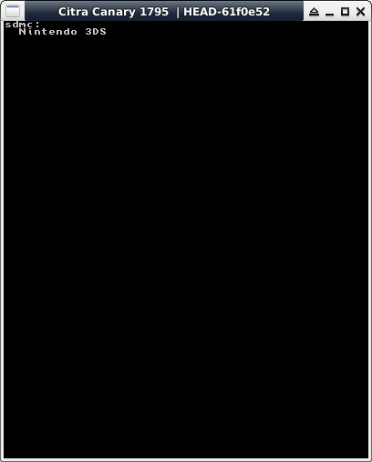

參考資訊：
https://hub.docker.com/r/greatwizard/devkitarm-3ds
SDCard目錄位於：sdmc:/
main.c
#include <stdio.h>
#include <stdlib.h>
#include <string.h>
#include <unistd.h>
#include <dirent.h>
#include <3ds.h>
int main(void)
{
int c = 0;
int n = 0;
char buf[255] = { 0 };
struct dirent **namelist = NULL;
gfxInitDefault();
consoleInit(GFX_TOP, NULL);
printf("sdmc:\n");
n = scandir("sdmc:/", &namelist, NULL, alphasort);
if (n != -1) {
for (c = 0; c < n; c++) {
printf(" %s\n", namelist[c]->d_name);
free(namelist[c]);
}
free(namelist);
}
gspWaitForVBlank();
gfxSwapBuffers();
svcSleepThread(3000000000LL);
gfxExit();
return 0;
}
完成
